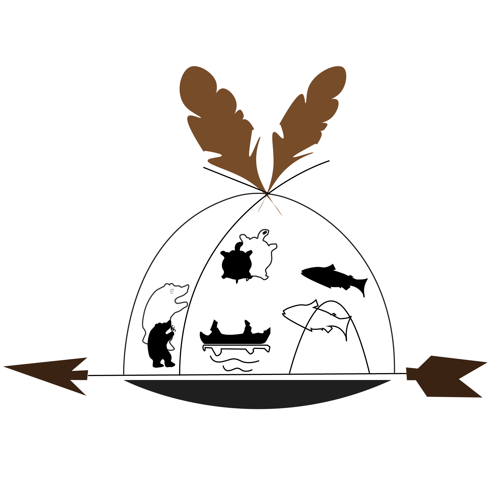
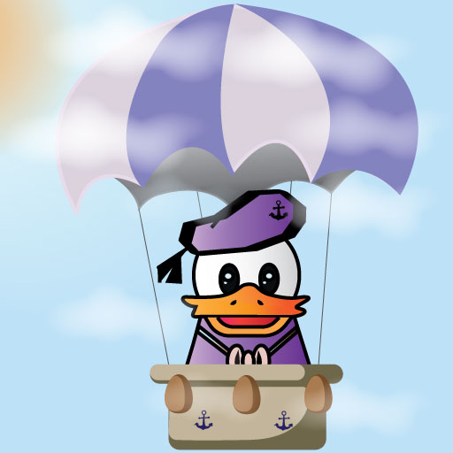

This is is a logo forOdinewin. Anishinabeg Odinewin is a place where the Algonquin youth learn langrage and culture. I use the Algonquin wigwam for my silhouette of my logo. I want to use this wigwam to include many Algonquin cultures. I drew the bear, fish, and turtle. Those animals are particularly symbolic. Algonquin Anishnabeg People live on the turtle island, So I drew the canoe. I think they want their next generation to be able to handle the canoe. They make a living by hunting and fishing, so I think the arrow is very important for them that's why I drew an arrow under the wigwam. It represents the foundation of their lives. I drew two feathers for the same reason.
